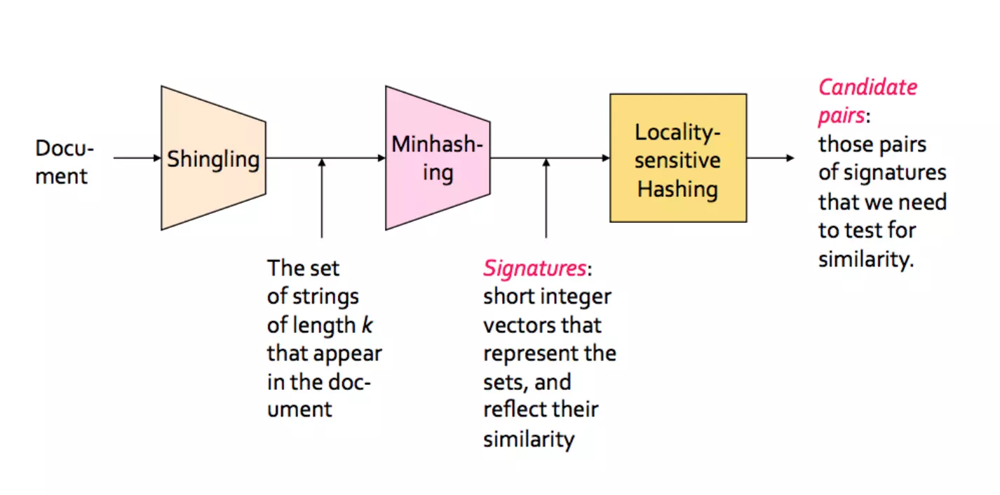
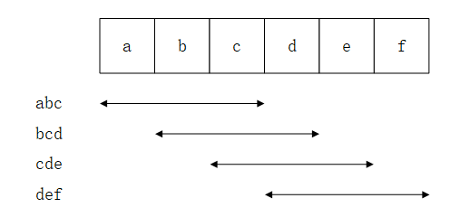
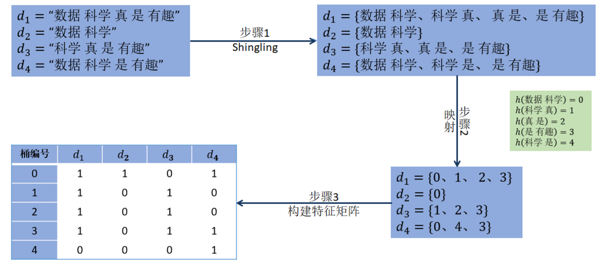
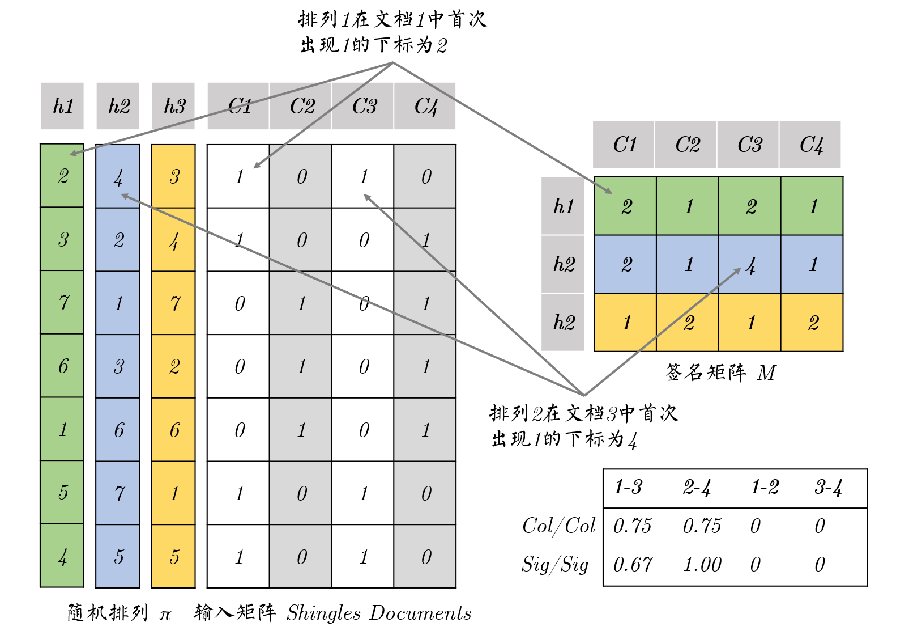
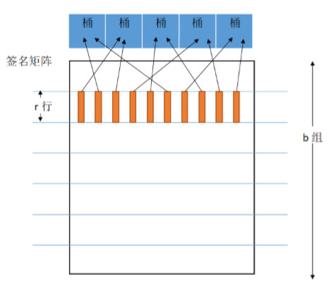

在文本冗余检测问题中，会面临海量数据和高维数据的挑战，学工界提出的技术大致有最近邻查找(Nearest Neighbor, NN)或者近似最近邻查找(Approximate Nearest Neighbor, ANN). 而局部敏感哈希(LSH)就是ANN中广泛运用的技术，它是采用哈希技术实现对海量高维数据进行近似最近邻快速查找的一种方法.
距离测量
目标：在高维空间中寻找最近邻，通常使用Jaccard距离和Jaccard相似度来描述.
Jaccard相似度 Jaccard Similarity
Jaccard相似度定义为两个集合的交集除以这两个集合的并集. \[ sim(A,B)=\dfrac{|A \cap B|}{|A \cup B|} \]
Jaccard距离 Jaccard Distance
Jaccard距离满足非负性、对称性、三角不等式. \[ d(A,B)=1-\dfrac{|A \cap B|}{|A \cup B|} \]
文档相似性分析
目标：给定大量的文档，找到相似的文档.
应用
- 镜像网站或可能镜像的网站的检测
- 新闻分析中发现相似性文章
存在的问题
- 相同内容的文章，但是内部文档片段的顺序可能不同
- 需要比较的文档对太多
- 文档太大或太多导致无法一次性加载进内存
LSH给出的解决方案
LSH使得原始数据空间中两个相邻的数据点经过哈希后，在映射的数据空间中的位置仍然相近，反之则相反. 整个LSH过程可以分为两个阶段
- 阶段一：离线建立索引
- 选择满足要求的哈希函数
- 根据要求的准确率，确定哈希表个数和构建每个表的哈希函数个数
- 通过哈希函数构建哈希表
- 阶段二：在线查找
- 将要查询的数据经哈希函数映射到相应的bucket中
- 计算要查询数据与bucket中数据的距离或相似度
哈希函数的选择要求
令 d1 和 d2 是在某一距离度量 D 下的两个距离阈值，且 \(d_1 \lt d_2\)，那么LSH采用的哈希函数要满足以下两个要求：
- 如果\(D(\mathbf{x},\mathbf{y}) \leqslant d_1\)，则\(h(x)=h(y)\)的概率至少为 p1，即\(P(h(\mathbf{x})=h(\mathbf{y}))\geqslant p_1\);
- 如果\(D(\mathbf{x},\mathbf{y})\geqslant d_2\)，则\(h(x)=h(y)\)的概率至多为 p2，即\(P(h(\mathbf{x})=h(\mathbf{y}))\leqslant p_2\).
常用距离度量
- Jaccard距离度量
- Hamming距离度量
- Consine距离度量
- Normal Euclidean距离度量
LSH的三个核心步骤

- Shingling 将文本转化为集合，进而将集合转化为布尔向量
- Minhashing 将布尔向量转化为数字签名，并且签名间保持原来文档间的相似度
- Locality-Sensitive Hashing 筛选和寻找相似文档候选对
Shingling
Shingling的中文意思是“瓦片”，想象一下屋顶上的瓦片，总是上一片瓦片的尾部会盖在下一片瓦片的头部，对于一个文档集，以abcdef为例，假设3个字符表示为一个shingling，那么这个文档可以由abc，bcd，cde，def这四个“瓦片”组成，且前一个“瓦片”的尾部是后一个“瓦片”的头部.

Shingling是NLP中常用的衡量两个文档相似度的技术. 将一篇文档视为一个字符串，文档的 k-shingling(or k-gram) 定义为其中任意长度为 k 的子字符串. 假设一个文档D的内容是abcbc，则其2-shingling组成的包为S(D)={ab,bc,cb,bc}，去掉重复元素后即为文档D的2-shingling集合为S(D)={ab,bc,cb}.
k 值的选取会对最终结果产生很大影响，k选取太小比如1，会导致文档中包含大量常用字，因此会得到很多Jaccard相似度很高的文档对；如果k太大，会导致每篇文档只有很少的k-shingling存在交集，使得几乎所有文档相似度都为0.
得到k-shingling后可以通过Jaccard相似度对两片文档进行测量，但是由于每篇文档的k-shingling集合都非常大，因此会消耗很大的内存和计算时间. 此时，可以通过哈希函数将将文档集合表征为文档集的特征矩阵，其中矩阵的列对应于文档，行对应于k-shingling元素映射后的编号.

其中每一列表示一个文档的数字签名Signature，可以通过比较文档的数字签名来判断两篇文档是否相似，数字签名相似的两片文档通常也是相似的. 到此为止，需要注意的两个问题是：
- 尽管文档的数字签名相比于文档的k-shingling集合已经变小了，但可能对于实际计算来说也还是很大，因此可能会造成较大的内存开销和消耗较多的计算资源，所以我们需要之后的Minhashing和LSH来继续优化
- 这种方法可能会同时带来False Positive 和False Negative
Min-hashing
对于经过Shingling之后得到的数字签名，我们需要继续通过Hash来减小其大小，因此，我们需要选取一个合适的哈希函数，以使得
- 经过哈希之后的签名矩阵能够放在内存中
- sim(C1, C2) 和 sim(h(C1), h(C2))应该是几乎相等的
显然，哈希函数的选取依赖于距离测量方法，不是所有的距离测量方法都能找到一个合适的哈希函数. 在这里我们采取Jaccrad距离测量方法，对于Jaccard距离测量，有一个适合它的Hash函数：Min-Hashing.
随机排列 Random Permutation
- 随机排列是对集合中元素顺序的随机排列
- 洗牌就是一个很好的例子
定义
假设布尔矩阵以随机排列 \(\pi\) 进行排列，定义“哈希”函数 \(h_\pi =\)列 C 在随机排列 $$ 下首次出现 1 的单元的下标 \[ h_\pi(C)=\min_{\pi} \pi(C) \] 然后使用几个相互独立的哈希函数（也就是随机排列）生成一个列的签名.
实例

Min-Hashing 属性
给定一个随机排列 \(\pi\)，我们有 \[ P(h_\pi(C_1) = h_\pi(C_2)) = sim(C_1,C_2) \] Proof
定义 \(\pi(C_1)_k\) 表示文档 C1 在随机排列 \(\pi\) 下在下标为 k 处的单元首次取得1，定义 \(\pi(C_2)_k\) 表示文档 C2 在随机排列 \(\pi\) 下在下标 k 处的单元首次取得1. 对于文档C1和文档C2，其Min-Hashing对 \((\pi(C_1)_k),\pi(C_2)_k)\) 共有四种可能，即(1,1)，(1,0)，(0,1)，(0,0)，分别记每种可能出现的次数为a，b，c，d，即 \[ \begin{align*} (\pi(C_1)_k),\pi(C_2)_k) = \left\{ \begin{array}{**lr**} (1,1) & \text{a times} \\ (1,0) & \text{b times} \\ (0,1) & \text{c times} \\ (0,0) & \text{d times} \end{array} \right. \end{align*} \] 那么，文档C1和C2的Jaccard相似度可以表示为 \[ sim(C_1,C_2) = \dfrac{a}{a+b+c} \] 对于Min-Hashing，当 \(\pi(C_1)_k\) 和 \(\pi(C_2)_k\) 不都为1时会继续增加 k，直到为1，那么 \(h_\pi(C_1) = h_\pi(C_2)\) 的情况就是二者同时为1，即\((\pi(C_1)_k),\pi(C_2)_k) =(1,1)\) 的情况，这种情况的可能性为 \[ P(h_\pi(C_1) = h_\pi(C_2)) = \dfrac{a}{a+b+c} \] 因此 \[ P(h_\pi(C_1) = h_\pi(C_2)) = sim(C_1,C_2) \]
减小签名矩阵大小
假设一个文档的长度为 m，即需要 m bits来存储其布尔矩阵，那么对于单个 Min-Hashing 值，需要 \(\log_2 m\) bits来存储，假设一个文档需要使用 k 个Min-Hashing函数，那么该文档经过Min-Hashing后的签名矩阵大小为 \(k \log_2 m\)，那么文档大小变为了原来的 \[ \dfrac{k \log_2 m}{m} \] 对于 m = 1 billion，k = 100，该值为 2.98×10-6，可以看到Min-Hashing明显地减小了文档签名矩阵长度，减少了内存消耗.
虽然使用最小哈希签名矩阵明显减少了数据规模，但当哈希函数个数较少时会使得估算误差增大；哈希函数太多又会增加计算量. 因此，需要选择适当数量的哈希函数.
基于 Min-Hashing 的LSH 过程
一旦得到一个最小哈希签名矩阵，可以运用条块化的方式实现LSH. 将签名矩阵划分为 b 个行条(band)，每个行条包括 r 行(raw). 对于每个行条，都存在一个哈希函数能够将一个行条中的一列数据（r 个整数向量）映射到一个桶中. 通常，对不同的行条采用不同的哈希函数，这样，即便是不同行条的同一列也大概率不会被映射到同一个桶中. 最终，任意两个集合只要至少一次被映射到同一个桶中，就被认为是一对候选相似组合.

现在分析两个集合被映射到同一个桶中的概率与Jaccard 相似度 s 之间的关系：
两个不同的min-hashing 签名相等的概率为 s
在某个具体行条中，这对集合所有的最小哈希值都相等的概率为 sr
在某个具体行条中，这对集合至少有一对最小哈希值不相等的概率为 1-sr
在任何一个行条中，这对集合都至少有一对最小哈希值不相等的概率为 (1-sr)b
在整个签名矩阵中，这对集合至少有一个行条中任意一对最小哈希值都相等的概率为 1-(1-sr)b
因此，这对集合至少有一次被哈希到同一个桶中的概率为
1-(1-sr)b
例
假设文档C1和文档C2的相似度为0.8，且b=20，r=5，那么这两个集合至少有一次被哈希到同一个桶中的概率为 \[ 1-(1-0.8^5)^{20} = 0.999644 \] 假设文档C1和文档C2的相似度为0.3，且b=20，r=5，那么这两个集合至少有一次被哈希到同一个桶中的概率为 \[ 1-(1-0.3^5)^{20} = 0.047494 \] 可以看到相似度高的文档被哈希到一个桶中的概率也很高，相似度低的文档被哈希到同一个桶中的概率也比较低.

我们所需要做的事情就是不断地调整 b 和 r 以使得False Positive 和 False Negative 都比较小.
应用场景
- 音频、图像检索：先对音频、图像构建LSH，依据LSH结果快速找到与之类似的其他对象
- 聚类：以样本经过LSH的结果作为特征，并将LSH结果相同或相近的样本归为一类
- 冗余检测：检测互联网中网页的相似度
不足
LSH最然检索速度很快，但是算法的空间复杂度高. 因为想要达到较好的性能，需要建立多张哈希表.
绘图代码：
1 | import scipy.integrate as sci |